Home · Lezioni · Lezione 15 · 27/11
Segnalazione su canali a banda limitata: OFDM
Trasmissione multiportante, FDM e OFDM, sottoportanti ortogonali, prefisso ciclico e convoluzione circolare, IFFT/FFT, equalizzazione a una presa, PAPR e offset.
Indice della lezione
- Trasmissione multiportante
- Titolo
- Perché la trasmissione multiportante
- FDM convenzionale
- Il convertitore S/P come decomposizione polifase
- Trasmettitore FDM convenzionale
- Ricevitore FDM convenzionale
- FDM e OFDM a confronto
- Flussi paralleli e forma d'onda multiportante
- Schema con i mapper e perché il sistema rallentato aiuta
- Il canale visto dalle sottoportanti
- Impulsi ortogonali, ISI e ICI
- Impulsi OFDM ortogonali
- ISI e ICI
- Due fonti di interferenza
- Calcolo dell'ortogonalità
- Ortogonalità delle sottoportanti
- Spaziatura delle sottoportanti: la condizione sinc
- Il banco di correlatori OFDM
- Ricevitore ideale in AWGN: né ISI né ICI
- L'ortogonalità semplifica anche il rumore in uscita
- Spettro del segnale OFDM
- Autocorrelazione del segnale OFDM
- PSD di un segnale OFDM ideale
- Esempio: risparmio di banda con la sovrapposizione
- Canale dispersivo e prefisso ciclico
- Un canale LTI dispersivo introduce memoria
- Intervallo di guardia e prefisso ciclico
- Estensione ciclica a tempo continuo
- Finestra utile del ricevitore e condizione sul CP
- I campioni ritardati nell'intervallo utile
- Perché il CP elimina l'ISI: separazione dei blocchi
- Richiamo: le sinusoidi complesse sono autofunzioni di un canale LTI
- Calcolo a tempo continuo: perché non resta ICI
- Nota sulla normalizzazione degli impulsi OFDM
- L'equalizzazione in frequenza segue direttamente
- Realizzazione con IFFT e FFT
- Il campionamento uniforme rivela la IFFT
- Rappresentazione matriciale di DFT e IDFT
- Serializzazione dell'uscita IFFT e ricostruzione di x(t)
- Costruzione del prefisso ciclico a tempo discreto
- Esempio numerico di inserimento del CP
- La convoluzione lineare diventa circolare
- Il teorema della convoluzione circolare
- La relazione ingresso-uscita in frequenza
- Equalizzazione, codifica e sistema completo
- Relazioni scalari indipendenti dopo la DFT
- Un esempio elementare a due prese
- Un canale LTI può attenuare fortemente alcune sottoportanti
- Equalizzazione a una presa nel dominio della frequenza
- Codifica e interleaving sulle sottoportanti
- Trasmettitore OFDM completo in banda base
- Ricevitore OFDM completo in banda base
- Il prezzo del prefisso ciclico
- Esempio numerico di Goldsmith: scelta del prefisso
- L'overhead del CP nel bit rate
- IEEE 802.11a: i parametri temporali
- IEEE 802.11a: bit rate non codificati
- Modulazione adattativa: costellazioni diverse su toni diversi
- Limiti dell'OFDM
- Rapporto potenza di picco / potenza media (PAPR)
- Perché il segnale OFDM può avere picchi grandi
- Un piccolo errore di frequenza rompe l'ortogonalità
- Offset di frequenza e di tempo: il modello a tempo discreto
- Scelta del numero di sottoportanti: compromessi di base
- Spiegazioni e dimostrazioni passo-passo
- Domande da esame
Il corso, slide per slide
Trasmissione multiportante
Titolo
- «Signaling over bandlimited channels: OFDM», corso di Trasmissione dei segnali digitali, D. Darsena, a.a. 2026-27.
Perché la trasmissione multiportante
- Nelle lezioni precedenti un canale a banda limitata con memoria era modellato dalla convoluzione tra la forma d'onda trasmessa e la risposta impulsiva del canale; in ricezione contributi di simboli diversi possono sovrapporsi e generare ISI.
- In un sistema multiportante il flusso in ingresso si divide in più flussi a rate più basso, trasmessi a frequenze distinte. Appunti: dal flusso a R_b si ricavano sottoflussi a rate minore, R_b/N, con portanti scelte in modo che gli spettri non si sovrappongano (FDM); se si sovrappongono si ha l'OFDM.
- Una scelta opportuna delle frequenze rende questi segnali ortogonali anche quando gli spettri si sovrappongono: FDM a bande separate → OFDM a bande ortogonali e sovrapposte.
FDM convenzionale
- Una sorgente seriale emette il flusso di bit d[\ell] a bit rate R_b=1/T_b. Un convertitore serie/parallelo (S/P) distribuisce gruppi di N bit su N flussi più lenti; per segnalazione binaria
- L'i-esimo flusso è mappato in simboli, sagomato da un impulso g(t) e traslato alla frequenza f_i. Nella FDM ordinaria filtri passa-banda isolano i flussi assegnando loro intervalli di frequenza non sovrapposti.
Il convertitore S/P come decomposizione polifase
- d(mN+i)=d_i(m), m\in\mathbb Z, i=0,1,\dots,N-1: il convertitore S/P realizza la decomposizione polifase del flusso \dots d(N)\,d(N-1)\dots d(2)\,d(1)\,d(0).
- Ogni uscita ha rate R_b/N, dovuto al fatto che si deve attendere che il blocco sia completo. Si ottiene d_0(0)=d(0), d_1(0)=d(1), …, d_{N-1}(0)=d(N-1) sulle N uscite; al secondo istante di tempo d_0(1)=d(N), d_1(1)=d(N+1), …
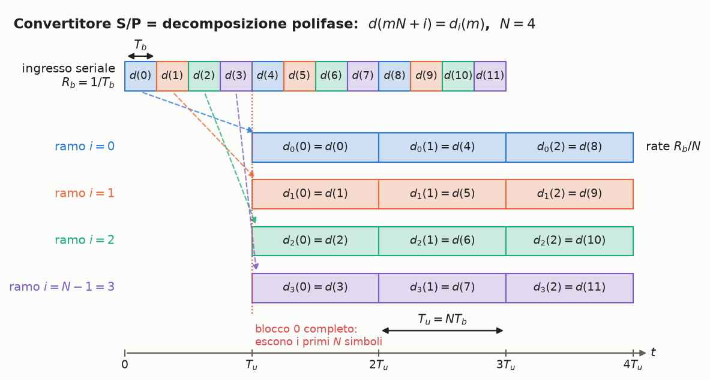
🧩 Ridisegno mio dello schema degli appunti, con N=4. Il colore dice su quale ramo finisce ogni simbolo seriale: d(\ell) va sul ramo i=\ell \bmod N come simbolo m=\lfloor \ell/N\rfloor. Il ramo parte solo quando il blocco di N simboli è completo, e ogni simbolo in uscita dura T_u=NT_b: è per questo che il rate per ramo scende a R_b/N.
Trasmettitore FDM convenzionale
- Schema: d[\ell] → S/P → per ogni ramo mapper → g(t) → e^{j2\pi f_it} (i=0,\dots,N-1) → somma → x(t).
- Appunti: x(t) è il segnale multiportante in banda base; e^{j2\pi f_it} non è ancora la portante finale: si costruisce un segnale multiportante, che poi l'upconverter trasla alla radiofrequenza, cioè alla portante.
- La FDM ordinaria sceglie le f_i abbastanza separate da evitare la sovrapposizione spettrale; l'OFDM abbandona deliberatamente questo requisito e lo sostituisce con l'ortogonalità su un intervallo di simbolo. Appunti: FDM, l'ortogonalità è garantita dalla non sovrapposizione; OFDM, le bande si sovrappongono ⇒ la demodulazione è più difficile.
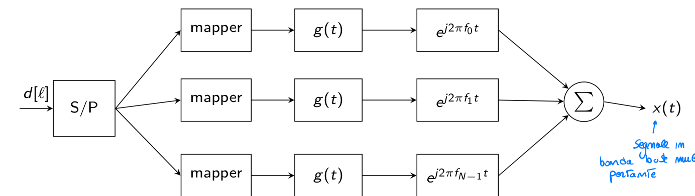
Ricevitore FDM convenzionale
- Schema: un banco di filtri (appunti) passa-banda attorno a f_0,\dots,f_{N-1}, un demodulatore per ramo, P/S → \hat d[\ell].
- Ogni filtro estrae una banda individuale non sovrapposta; ogni ramo è demodulato e rivelato separatamente e i flussi si ricombinano con la conversione P/S.
- L'OFDM permetterà di sostituire i filtri con un banco di proiezioni ortogonali, realizzato in modo efficiente con una FFT.
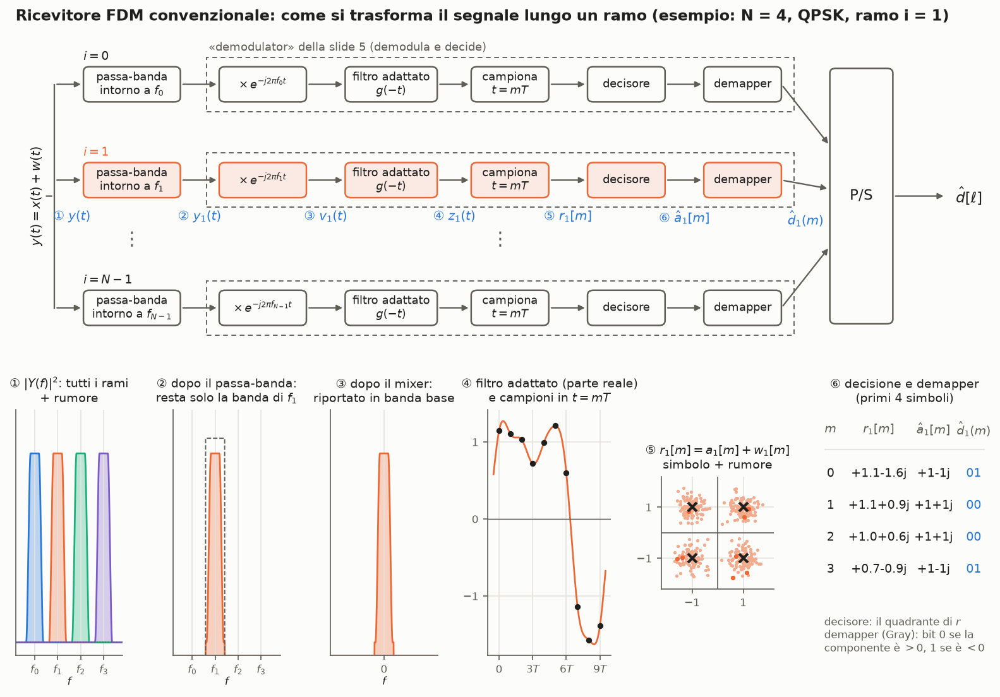
🧩 Ridisegno mio dello schema della slide, con l'interno del blocco «demodulator» esplicitato. Esempio: N=4 rami, QPSK, impulso complessivo di Nyquist g(t)\ast g(-t) (coseno rialzato, g reale), canale ideale, T = durata di simbolo di un ramo. Il ramo i=1 è seguito blocco per blocco. ① y(t) contiene tutte le sottobande più il rumore. ② Il passa-banda lascia solo la banda di f_1. ③ Moltiplicando per e^{-j2\pi f_1 t} la banda torna attorno a 0. ④ Il filtro adattato dà z_1(t), campionato in t=mT. ⑤ Ogni campione è simbolo più rumore, r_1[m]=a_1[m]+w_1[m]: punti sparsi attorno alla costellazione. ⑥ Il decisore sceglie il punto della costellazione più vicino, \hat a_1[m], e il demapper lo traduce in bit \hat d_1(m). Il P/S rimette in serie i bit di tutti i rami e dà \hat d[\ell].
FDM e OFDM a confronto
- Figura: in alto la FDM, bande separate da intervalli di guardia (guard); in basso l'OFDM, sottoportanti sovrapposte e ortogonali a distanza \Delta f=1/T_u, ognuna con il picco dove le altre passano per zero.
- FDM: spettri non sovrapposti, servono guardie in frequenza. OFDM: spettri delle sottoportanti sovrapposti, separabili con demodulazione coerente e ortogonale.
- L'ortogonalità è una proprietà delle forme d'onda su un intervallo di osservazione finito, non della non sovrapposizione degli spettri. Appunti: serve una forma di ortogonalità che agisca anche nel dominio del tempo.
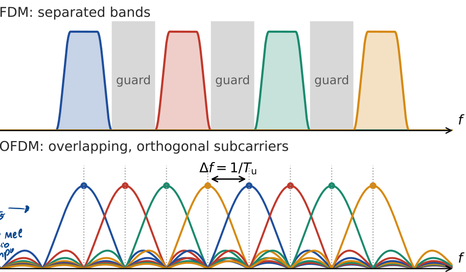
Flussi paralleli e forma d'onda multiportante
- Schema: d[\ell] → S/P → mapper → a_i[n] → \phi_i(t) → somma → x(t). Appunti: \phi_0(t),\dots,\phi_{N-1}(t) in generale possono essere diversi; in alcuni casi non si può proprio usare lo stesso impulso di base.
- f_n(t) è la frame multicanale (appunti: la frame prodotta nell'n-esimo intervallo di simbolo); a_i[n] è il simbolo portato dalla sottoportante i nel blocco OFDM n. Nel modello presente un blocco dura T_u, prima di aggiungere un prefisso ciclico.
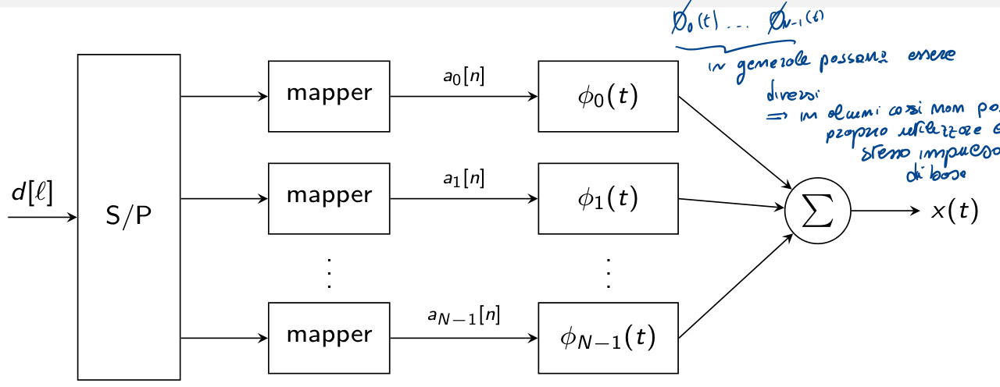
Schema con i mapper e perché il sistema rallentato aiuta
- Lo S/P manda \dots d(N)\,d(0) sul primo filo (flusso sul filo i-esimo: d_0(m)), d_1(m) sul secondo, …, d_{N-1}(m) sull'ultimo; ogni mapper produce a_i(m) (per esempio simboli QPSK), che modula \phi_i(t-mT_u) alla frequenza f_i.
- Quanto devono durare gli impulsi? Non T_b ma T_u, e il bit rate è diminuito: T_u=NT_b è l'intervallo di blocco, R_b/N=1/(NT_b).
- Rallentare i rami serve a combattere l'ISI. Il ragionamento degli appunti, un passaggio alla volta:
- Senza S/P: R_b alto ⇒ simboli corti, T_b=1/R_b ⇒ il segnale varia rapidamente ⇒ banda larga, dell'ordine di 1/T_b.
- Banda larga ⇒ più ISI. Nel tempo: la risposta del canale dura un tempo fissato \tau, che con simboli corti copre circa \tau/T_b simboli (la memoria L della Lezione 14 cresce). In frequenza: lo spettro è più largo del tratto in cui il canale è piatto, quindi viene distorto.
- Con lo S/P: ogni ramo porta R_b/N ⇒ simboli lunghi T_u=NT_b ⇒ banda per ramo circa N volte più stretta. La stessa \tau copre ora solo \tau/(NT_b) di simbolo ⇒ ISI ridotta, e su ogni ramo il canale è quasi piatto.
- Il rate complessivo non cambia: N rami a R_b/N danno ancora R_b. Si rallenta il singolo ramo, non la trasmissione.
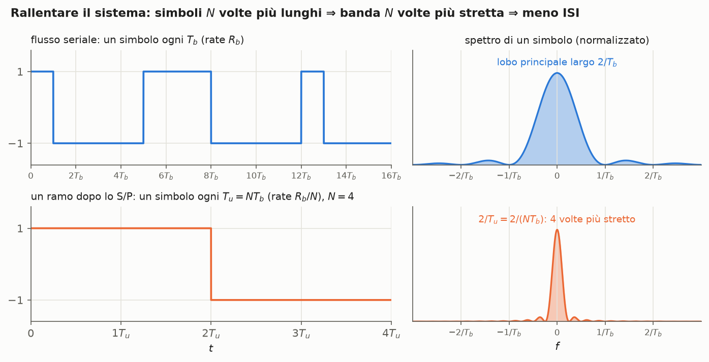
🧩 Ridisegno mio del ragionamento degli appunti, con N=4. A sinistra lo stesso tratto di tempo: il flusso seriale cambia simbolo ogni T_b, un ramo dopo lo S/P ogni T_u=NT_b. A destra lo spettro di un simbolo rettangolare: durata N volte maggiore vuol dire lobo principale N volte più stretto, quindi ogni ramo occupa una banda piccola.
Il canale visto dalle sottoportanti
- Si supponga di dover trasmettere un segnale con spettro più largo della banda del canale (disegno: banda del canale in rosso, spettro del segnale in blu).
- Con la trasmissione multiportante lo spettro è fatto di tante sottoportanti strette (disegno in verde): su ciascuna il canale è approssimabile piatto ⇒ maggiore robustezza all'ISI, perché la banda del singolo ramo è minore.
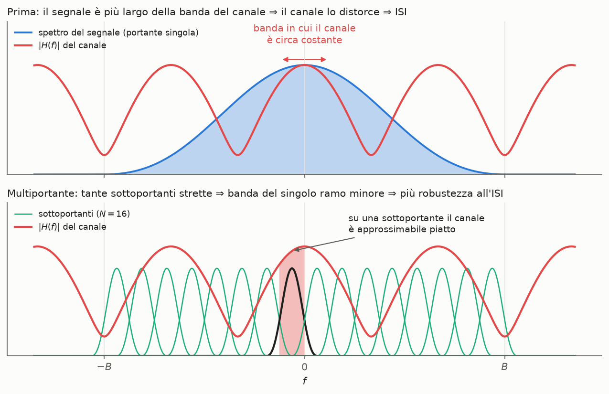
🧩 Ridisegno mio del disegno degli appunti. Il canale è disegnato come una curva \lvert H(f)\rvert che sale e scende, e la «banda del canale» è il tratto in cui resta circa costante. In alto lo spettro a portante singola attraversa massimi e minimi del canale e viene distorto. In basso N=16 sottoportanti strette: su quella evidenziata il canale cambia pochissimo, quindi la sottoportante vede un canale piatto, cioè un solo coefficiente.
Impulsi ortogonali, ISI e ICI
Impulsi OFDM ortogonali
- Appunti: si deve imporre una biortogonalità ⇒ le \phi devono avere una forma particolare.
- Finestra rettangolare di energia unitaria e impulsi:
- Le N sottoportanti usano, nel modello in banda base complessa, le frequenze f_i=i\Delta f con \Delta f=1/T_u, i=0,\dots,N-1. Appunti: non sono le frequenze finali, si deve ancora passare per l'upconverter.
- Due forme separate di ortogonalità: sottoportanti diverse (i\neq k) sono ortogonali dentro un blocco; blocchi diversi (n\neq m) non si sovrappongono nel tempo nel modello ideale senza CP.
ISI e ICI
- Il segnale multiportante ha due indici indipendenti: x(t)=\sum_{n\in\mathbb Z}\sum_{k=0}^{N-1}a_k[n]\,\phi_k(t-nT_u).
- La statistica di decisione per la portante i e il blocco m (appunti: si vuole ricavare il simbolo trasmesso nell'm-esimo intervallo sull'i-esimo ramo) contiene
- Termini con n\neq m: ISI, interferenza da altri intervalli di simbolo. Termini con n=m e k\neq i: ICI, interferenza da altre sottoportanti. Il termine desiderato è n=m, k=i; tutti gli altri si annullano se gli impulsi sono ortonormali.
Due fonti di interferenza
- Sulle uscite dello S/P: d(N)\,d(0)=d_0(1)\,d_0(0), d(N+1)\,d(1)=d_1(1)\,d_1(0), …, d(N-1). Il simbolo d_1(0) subisce l'interferenza di simboli dello stesso stream e di fili diversi.
- Due fonti di interferenza: ISI; ICI, interferenza generata da ciò che è stato trasmesso su rami differenti.
- Si deve imporre che il prodotto scalare sia diverso da zero solo per n=m (ortogonalità temporale) e i=k (ortogonalità fra gli impulsi).
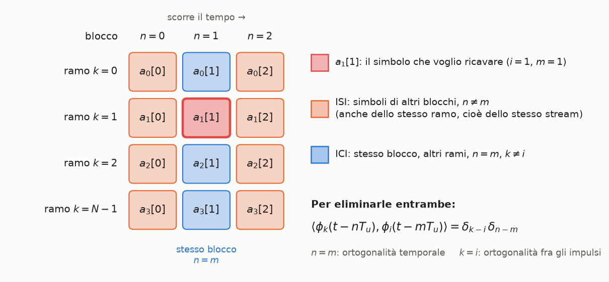
🧩 Ridisegno mio del disegno degli appunti, con N=4: ogni casella è un simbolo a_k[n], righe = rami, colonne = blocchi. Per ricavare a_1[1] disturbano tutti i simboli degli altri blocchi (ISI, colonne arancioni, compreso lo stesso ramo) e gli altri rami dello stesso blocco (ICI, colonna blu). La doppia condizione \delta_{k-i}\,\delta_{n-m} elimina le due cose insieme.
Calcolo dell'ortogonalità
- Se m\neq n le finestre non si sovrappongono nel tempo (disegno: [mT,(m+1)T] e [nT,(n+1)T] disgiunti). Per m=n:
- Basta una minima variazione della frequenza perché si abbia ICI ⇒ motivo per cui prima l'OFDM non era di uso pubblico ⇒ erano necessari banchi di oscillatori molto precisi ⇒ la FFT ha risolto questi problemi ⇒ alla base del 5G.
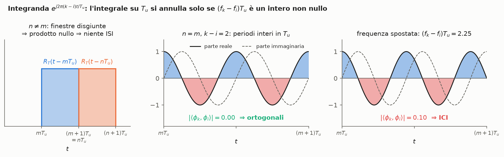
🧩 Ridisegno mio del calcolo degli appunti. A sinistra il disegno delle due finestre: per n\neq m non si sovrappongono e il prodotto è nullo. Al centro, per n=m, l'integranda e^{j2\pi(k-i)t/T_u} con k-i=2: in T_u entrano periodi interi, le aree blu e rosse si compensano e il prodotto scalare è zero. A destra la «minima variazione di frequenza» degli appunti: con (f_k-f_i)T_u=2.25 le aree non si compensano più e resta \lvert\text{sinc}(2.25)\rvert\approx 0.10, cioè ICI.
Ortogonalità delle sottoportanti
- Per uno stesso blocco OFDM:
- Poiché k-i è intero, e^{j2\pi(k-i)}=1, e quindi
- Per m\neq n i supporti temporali sono disgiunti (a meno degli estremi); per m=n e k\neq i gli esponenziali complessi integrati si cancellano esattamente.
Spaziatura delle sottoportanti: la condizione sinc
- Due impulsi a frequenze generiche f_k, f_i, \nu=f_k-f_i; su un intervallo utile OFDM
con \text{sinc}(u)=\sin(\pi u)/(\pi u), \text{sinc}(0)=1 (il secondo passaggio raccoglie e^{j\pi\nu T_u} e usa Eulero).
- Per k\neq i il prodotto scalare si annulla se (f_k-f_i)T_u è un intero non nullo: la spaziatura uniforme positiva più piccola è \Delta f=1/T_u.
- Figura: quattro sinc centrate in f_0,\dots,f_3 a distanza 1/T_u; in ogni frequenza di sottoportante (•) tutti gli altri spettri sono nulli (○).
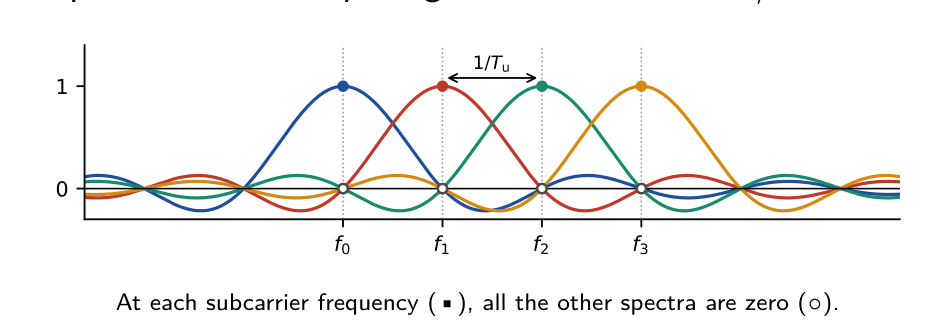
Il banco di correlatori OFDM
- Schema: r(t) → N rami, ciascuno \times\,\phi_i^\ast(t-nT_u) e \int dt → r_0[n],\dots,r_{N-1}[n]. L'i-esimo correlatore calcola
- Con gli impulsi ortonormali questo solo calcolo estrae l'i-esimo simbolo trasmesso, in assenza di distorsione del canale (a parte il rumore).
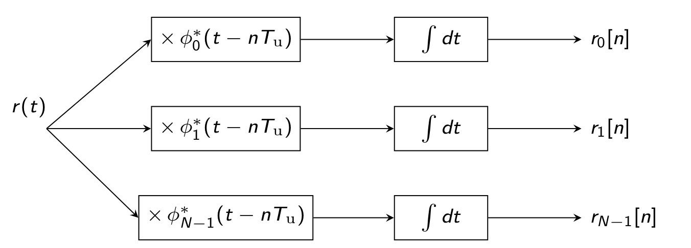
Ricevitore ideale in AWGN: né ISI né ICI
- Con r(t)=x(t)+w(t):
- Ipotesi: sincronizzazione ideale di tempo e di frequenza della portante, canale non dispersivo, impulsi di ricezione ortonormali. Per AWGN complesso con PSD bilatera N_0: w_i[n]\sim\mathcal{CN}(0,N_0).
- ISI: interferenza dai blocchi m\neq n; ICI: dalle sottoportanti k\neq i.
L'ortogonalità semplifica anche il rumore in uscita
- Rumore w(t) gaussiano complesso bianco a media nulla, E\{w(t)w^\ast(u)\}=N_0\delta(t-u); uscita dell'i-esimo correlatore w_i[n]=\int w(t)\phi_i^\ast(t-nT_u)dt.
- Media nulla; correlazione mutua (la \delta riduce l'integrale doppio a uno solo)
- I campioni di rumore alle uscite dei correlatori sono incorrelati con la stessa varianza N_0; essendo gaussiani, sono anche indipendenti.
Spettro del segnale OFDM
Autocorrelazione del segnale OFDM
- Per lo spettro medio di potenza si assumono simboli indipendenti a media nulla con E\{a_i[n]a_k^\ast[m]\}=E_s\,\delta_{i-k}\,\delta_{n-m}. Allora
- R_{xx}(t,\tau) dipende da t oltre che da \tau ed è periodica in t di periodo T_u: il segnale OFDM è ciclostazionario. La si media su un periodo prima della trasformata di Fourier.
PSD di un segnale OFDM ideale
- Autocorrelazione media:
(con u=t-nT_u gli intervalli [-nT_u,(1-n)T_u) coprono tutta la retta).
- Per Wiener-Khinchin, e poiché \lvert\Phi_i(f)\rvert^2=T_u\,\text{sinc}^2[T_u(f-i/T_u)],
- La PSD è una somma di sinc² traslate, una per sottoportante. Le sottoportanti ortogonali si sovrappongono in frequenza; con simboli indipendenti le loro PSD semplicemente si sommano.
Esempio: risparmio di banda con la sovrapposizione
- N sottocanali con tempo di simbolo T_u; per sottocanali illustrativi a coseno rialzato, \beta roll-off ed \varepsilon piccolo margine ai bordi:
- Per N=128, T_u=0.2 ms, \beta=1, \varepsilon=0.1: B_{FDM}=128\cdot2.1/0.2\ \text{ms}=1.344 MHz, B_{overlap}\simeq129.1/0.2\ \text{ms}\simeq0.646 MHz: la sovrapposizione dimezza circa la banda richiesta.
- Basato su Goldsmith, cap. 12, esempi 12.2–12.3: confronto illustrativo per il multiportante sovrapposto, non una formula esatta di banda occupata per l'OFDM a finestra rettangolare (che ha lobi laterali sinc).
Canale dispersivo e prefisso ciclico
Un canale LTI dispersivo introduce memoria
- h(\tau) risposta impulsiva di un canale LTI causale, non nulla per 0\le\tau\le T_h. Il segnale ricevuto è la convoluzione lineare
- Figura: blocchi n in [nT,(n+1)T) e n+1; la coda ritardata del blocco n (larga T_h) entra nel blocco successivo: ISI.
- I termini ritardati possono anche rovinare l'ortogonalità vista da un ricevitore che non usa un intervallo di osservazione adatto.
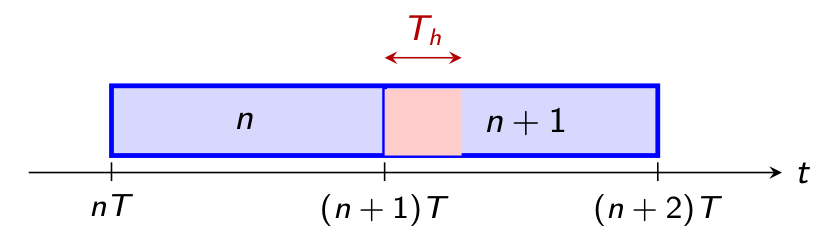
Intervallo di guardia e prefisso ciclico
- Durata complessiva del blocco T=T_u+T_g, con T_g intervallo di guardia.
- Una guardia vuota può evitare la sovrapposizione tra blocchi vicini, ma in generale non ripristina l'ortogonalità delle sottoportanti ritardate sull'intera finestra FFT lunga T_u.
- Invece si copiano gli ultimi T_g secondi di ogni blocco utile al suo inizio: è il prefisso ciclico (CP). Figura: CP (durata T_g) davanti al blocco OFDM utile (durata T_u), con la freccia dalla coda copiata.
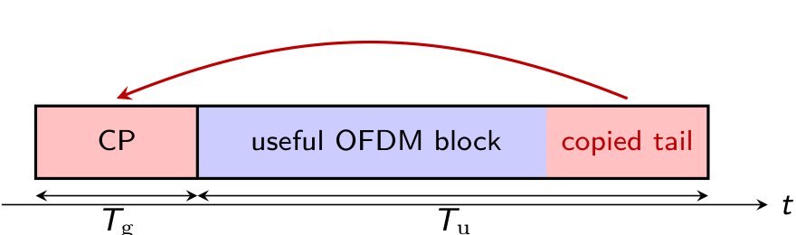
Estensione ciclica a tempo continuo
- Blocco utile per 0\le t<T_u e sua versione estesa per -T_g\le t<T_u:
- La forma d'onda trasmessa è fatta di blocchi estesi distanziati di T=T_u+T_g: x_{cp}(t)=\sum_{n\in\mathbb Z}\tilde f_n(t-nT-T_g), e il blocco n occupa nT\le t<(n+1)T: il CP in [nT,nT+T_g), la parte utile in [nT+T_g,(n+1)T).
- Proprietà chiave: tutti gli esponenziali delle sottoportanti sono T_u-periodici perché i è intero; il prefisso è quindi una vera estensione periodica della forma d'onda utile.
Finestra utile del ricevitore e condizione sul CP
- Figura: blocco precedente, CP (T_g), intervallo FFT (T_u), con l'inizio della finestra FFT alla fine del CP.
- Per un canale con supporto 0\le\tau\le T_h si richiede
- Si scarta il prefisso e si demodulano esattamente T_u secondi, liberi dall'interferenza del blocco precedente. Poiché il canale è LTI, i campioni utili subiranno una convoluzione circolare, e ogni sottoportante si può elaborare separatamente.
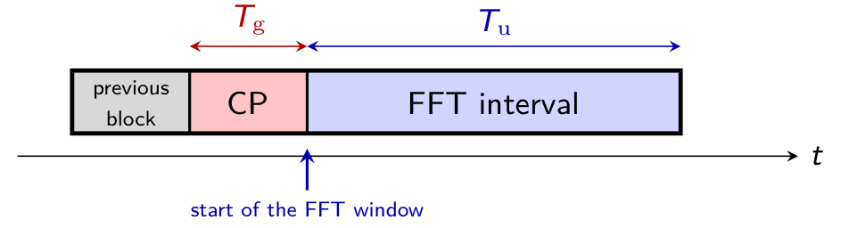
I campioni ritardati nell'intervallo utile
- Il blocco n occupa nT\le t<(n+1)T, prefisso compreso; tolto il prefisso, il ricevitore osserva t=nT+T_g+u, 0\le u<T_u.
- Per ogni ritardo 0\le\tau\le T_h, se T_g\ge T_h allora nT\le nT+T_g+u-\tau<(n+1)T (il minimo si ha per u=0, \tau=T_h; il massimo per \tau=0, u\to T_u).
- La disuguaglianza garantisce che ogni contributo ritardato nella finestra di osservazione appartiene al blocco n; i campioni del blocco n-1 sono esclusi: niente interferenza dal blocco OFDM precedente.
- Il CP deve essere abbastanza lungo da coprire la memoria del canale, non una frazione arbitraria del tempo di simbolo.
Perché il CP elimina l'ISI: separazione dei blocchi
- Per 0\le u<T_u si osserva il blocco n in t=nT+T_g+u:
- Con T_g\ge T_h l'argomento nT+T_g+u-\tau appartiene sempre allo stesso blocco esteso n, per 0\le u<T_u:
- I contributi di a_i[n-1] si annullano: niente ISI tra blocchi. Il canale LTI agisce su una forma d'onda utile estesa periodicamente, ed è per questo che segue un semplice modello nel dominio di Fourier.
Richiamo: le sinusoidi complesse sono autofunzioni di un canale LTI
- Canale LTI con risposta impulsiva h(t): y(t)=h(t)\ast x(t), H(f)=\mathcal F\{h(t)\}.
- Una sinusoide complessa e^{j2\pi ft} è autofunzione di ogni sistema LTI: h(t)\ast e^{j2\pi ft}=H(f)\,e^{j2\pi ft}. Ogni componente sinusoidale è moltiplicata per il numero complesso H(f), che può dipendere dalla sua frequenza (figura: e^{j2\pi ft} → canale LTI h(t) → H(f)e^{j2\pi ft}).
- Grazie al CP, nell'intervallo utile ogni sottoportante è esattamente una tale sinusoide complessa: è la chiave del calcolo seguente.
Calcolo a tempo continuo: perché non resta ICI
- Applicando la proprietà a ogni sottoportante dell'estensione periodica:
- Proiettando sull'i-esima sottoportante:
- Poiché l'ultimo integrale vale \delta_{k-i}: r_i[n]=H(i/T_u)\,a_i[n]+w_i[n], niente ICI.
Nota sulla normalizzazione degli impulsi OFDM
- Negli appunti a mano della lezione gli impulsi trasmessi e ricevuti possono essere normalizzati sulla durata completa del blocco T=T_u+T_g invece che su quella utile T_u.
- Un'ampiezza 1/\sqrt T in trasmissione e in ricezione introduce il fattore \frac1T\int_0^{T_u}e^{j2\pi(k-i)u/T_u}du=\frac{T_u}{T}\delta_{k-i}, e la statistica di decisione diventa
- Nella derivazione presente gli impulsi utili hanno energia unitaria su T_u e il fattore vale 1: le due formule differiscono solo per la normalizzazione, non per la proprietà OFDM.
L'equalizzazione in frequenza segue direttamente
- Dopo la rimozione di un CP sufficiente: r_i[n]=H(i/T_u)a_i[n]+w_i[n]. Per un coefficiente di canale noto e non nullo, una sola divisione complessa compensa il canale sulla sottoportante i:
- Il ricevitore non ha bisogno di un equalizzatore multicanale o di sequenza dentro questo modello ideale. Se \lvert H(i/T_u)\rvert è piccolo la divisione amplifica il rumore.
- Prossimo passo: ottenere queste N proiezioni con una sola FFT invece che con N correlatori analogici.
Realizzazione con IFFT e FFT
Il campionamento uniforme rivela la IFFT
- Si campiona l'n-esima forma d'onda utile in u=qT_c, q=0,\dots,N-1, con T_c=T_u/N, f_s=1/T_c=N/T_u. Dopo un aggiustamento di guadagno costante (f_n(qT_c)=x_n[q]/\sqrt{T_c}, perché e^{j2\pi iqT_c/T_u}=e^{j2\pi iq/N}):
- \{a_i[n]\}: gli N simboli d'ingresso nel dominio della frequenza; \{x_n[q]\}: gli N campioni nel tempo del blocco OFDM utile.
- Una IFFT veloce realizza la IDFT in O(N\log N) operazioni, invece di N oscillatori separati nel tempo. La normalizzazione 1/\sqrt N rende DFT e IDFT unitarie; il guadagno analogico di trasmissione assorbe la costante tra f_n(t) campionata e x_n[q].
Rappresentazione matriciale di DFT e IDFT
- \mathbf a_n=[a_0[n],\dots,a_{N-1}[n]]^T, \mathbf x_n=[x_n[0],\dots,x_n[N-1]]^T:
(\mathbf F_N\mathbf F_N^H=\mathbf I_N perché \frac1N\sum_qe^{-j2\pi(k-k')q/N} è una serie geometrica che vale 1 per k=k' e 0 altrimenti.)
- Conservazione dell'energia (Parseval): \sum_{q=0}^{N-1}\lvert x_n[q]\rvert^2=\sum_{i=0}^{N-1}\lvert a_i[n]\rvert^2.
- FFT e IFFT sono algoritmi veloci per la DFT e la IDFT, non trasformate diverse.
Serializzazione dell'uscita IFFT e ricostruzione di x(t)
- La IFFT crea i blocchi x_n[0],\dots,x_n[N-1]. Senza prefisso il flusso seriale è indicizzato da A[\ell]=x_n[q], \ell=nN+q, 0\le q<N. Se p_{DAC}(t) è la risposta impulsiva dello stadio DAC/ricostruzione:
- IFFT → serializzazione → ricostruzione è la controparte numerica di un banco di modulatori di sottoportante a tempo continuo. Con il CP ogni blocco contiene invece P=N+L_{cp} campioni e l'indicizzazione seriale cambia di conseguenza.
Costruzione del prefisso ciclico a tempo discreto
- Il blocco utile è x_n[0],\dots,x_n[N-1]; si prendono gli ultimi L_{cp} campioni e si mettono prima del blocco (figura: prefisso ciclico x[N-L_{cp}],\dots,x[N-1], poi il blocco utile x[0],\dots,x[N-1]):
- P è il numero di campioni trasmessi per blocco e T_g=L_{cp}T_c.
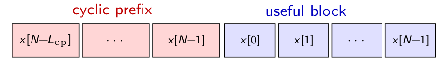
Esempio numerico di inserimento del CP
- N=8, L_{cp}=3. Sequenza utile (8 campioni) x[0],\dots,x[7]; si copiano gli ultimi tre all'inizio: x[5],x[6],x[7],x[0],x[1],x[2],x[3],x[4],x[5],x[6],x[7].
- Per q=-3,\dots,7: \tilde x[q]=x[(q)_8], (q)_8=q\bmod8. Il blocco trasmesso ha P=11 campioni; in ricezione si scartano i primi 3 e si tengono gli 8 successivi.
La convoluzione lineare diventa circolare
- Canale campionato: h[\ell]=0 per \ell\notin\{0,1,\dots,L_h\}, con L_{cp}\ge L_h. Tolto il CP, per q=0,\dots,N-1 (q-\ell\ge-L_h\ge-L_{cp}, quindi l'indice resta nel blocco esteso):
- Proprietà fondamentale del CP: il canale fisico fa una convoluzione lineare; estensione ciclica e rimozione del CP rendono gli N campioni utili in uscita uguali a una convoluzione circolare su N punti.
Il teorema della convoluzione circolare
- Con DFT/IDFT unitarie su N punti, sia y[q]=\sum_{\ell=0}^{N-1}h[\ell]\,x[(q-\ell)_N]. Prendendo la DFT (scambio delle somme e sostituzione p=(q-\ell)_N, con e^{-j2\pi kq/N}=e^{-j2\pi k\ell/N}e^{-j2\pi kp/N}):
- Con la DFT non unitaria su N punti dei tap del canale, H[k]=\sum_{\ell=0}^{N-1}h[\ell]e^{-j2\pi k\ell/N}, si ottiene Y[k]=H[k]X[k]: il canale non mescola mai valori diversi di k.
La relazione ingresso-uscita in frequenza
- DFT su N punti di y_n[q]:
- H[k] è la risposta in frequenza del canale campionato in f_k=k/T_u: la controparte discreta di H(k/T_u) trovata a tempo continuo.
Equalizzazione, codifica e sistema completo
Relazioni scalari indipendenti dopo la DFT
- I coefficienti H[k] non devono essere uguali sulle diverse sottoportanti; tuttavia la matrice in frequenza è diagonale: l'equalizzazione si può fare indipendentemente su ogni sottoportante.
- Questo modello diagonale si basa sulle ipotesi dette: CP, sincronizzazione e canale LTI.
Un esempio elementare a due prese
- Canale h[0]=1, h[1]=\alpha, h[\ell]=0 (\ell\ge2). Allora H[k]=1+\alpha e^{-j2\pi k/N}, k=0,\dots,N-1, e con L_{cp}\ge1
- Sottoportanti diverse possono avere coefficienti complessi H[k] diversi, ma restano relazioni scalari separate: ogni coefficiente si compensa indipendentemente.
- Non serve descrivere un particolare modello di propagazione radio: basta la risposta impulsiva elementare di un sistema LTI.
Un canale LTI può attenuare fortemente alcune sottoportanti
- Canale a due prese h[0]=h[1]=1, N=16 (\lvert1+e^{-j\theta}\rvert^2=2+2\cos\theta=4\cos^2(\theta/2)):
- Figura: \lvert H[k]\rvert^2 per k=0,\dots,15 sulla risposta in frequenza continua del canale (tratteggiata), da 4 in k=0 a zero in k=8 (nullo spettrale H[8]=0) e di nuovo verso 4.
- In k=8, H[8]=0: il simbolo portato da quella sottoportante non raggiunge il ricevitore e nessun equalizzatore può recuperarlo. Il CP elimina l'interferenza, non i nulli spettrali.
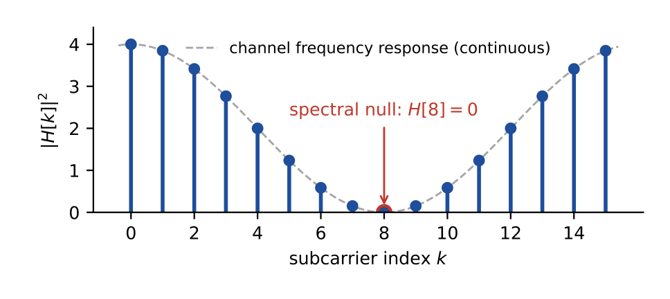
Equalizzazione a una presa nel dominio della frequenza
- Per una sottoportante fissata: Y[k]=H[k]a[k]+W[k].
- Zero forcing (ZF): \hat a_{ZF}[k]=Y[k]/H[k], H[k]\neq0. Compensa esattamente il guadagno del canale, ma la varianza del rumore equalizzato è N_0/\lvert H[k]\rvert^2.
- MMSE lineare (simboli indipendenti, risposta del canale nota):
Limita l'amplificazione del rumore al prezzo di una stima lineare polarizzata (per N_0\to0 ritorna lo ZF).
- La rivelazione coerente pratica richiede anche la stima di canale; codifica e interleaving sono importanti vicino alle forti attenuazioni.
Codifica e interleaving sulle sottoportanti
- Se \lvert H[k]\rvert è piccolo su alcuni toni, i simboli rivelati lì sono meno affidabili. La codifica di canale introduce ridondanza; un interleaver distribuisce i bit codificati su sottoportanti e blocchi OFDM diversi. Il decodificatore sfrutta i bit ricevuti in modo affidabile per correggere gli errori sui toni ricevuti male: è un motivo semplice per combinare l'OFDM con codifica e interleaving in frequenza.
- Figura: griglia tempo (orizzontale) – sottoportante k (verticale), i bit codificati sono sparsi sulla griglia. Concetto adattato da Goldsmith, par. 12.3.1; le celle colorate sono uno schema di interleaving, non un codice specifico.
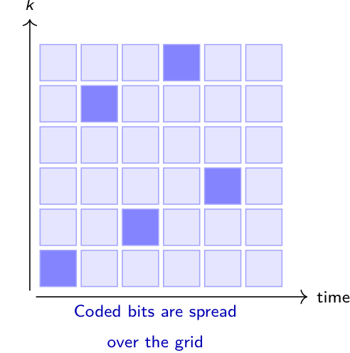
Trasmettitore OFDM completo in banda base
- Schema: bit → S/P → mapping QAM/PSK → IFFT su N punti (N campioni) → aggiunta del prefisso ciclico (P=N+L_{cp}) → P/S → DAC → x(t).
- Mappare i bit in N simboli complessi a_i[n] (alcune posizioni possono essere riservate a toni nulli o piloti).
- IFFT: generare gli N campioni utili nel tempo x_n[q].
- Anteporre L_{cp} campioni ciclici; serializzare, convertire in analogico, filtrare e convertire in alto (upconversion).
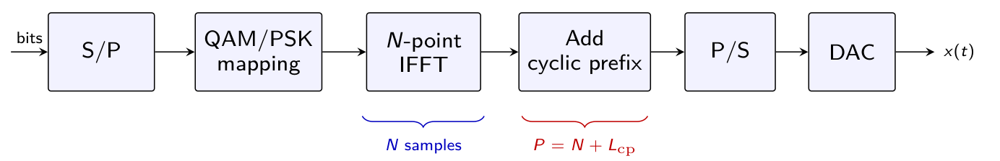
Ricevitore OFDM completo in banda base
- Schema: r(t) → ADC → S/P → rimozione del prefisso ciclico (P\to N) → FFT su N punti → equalizzazione a una presa (per sottoportante) → decisione e P/S → bit.
- Ottenere P campioni nel tempo per blocco; allineare la finestra FFT e rimuovere il CP.
- FFT: ottenere Y_n[k], l'osservazione in frequenza su ogni sottoportante.
- Stimare H[k], equalizzare gli N canali scalari e decidere i simboli.
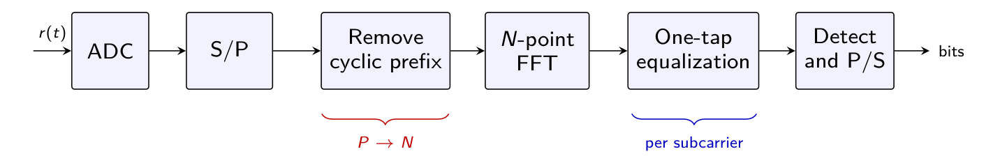
Il prezzo del prefisso ciclico
- N campioni utili richiedono P=N+L_{cp} campioni trasmessi:
- Figura: CP (L_{cp} campioni) seguito dai campioni utili (N).
- L'overhead si paga in tempo e in energia trasmessa, non nel numero di sottoportanti che portano informazione. Il rate netto dipende anche dalle sottoportanti attive, dall'allocazione dei piloti, dalla dimensione della costellazione e dalla codifica di canale.
Esempio numerico di Goldsmith: scelta del prefisso
- Canale LTI campionato con T_c=1\ \mus e memoria massima di 5\ \mus; si sceglie N=128, L_{cp}=8 campioni:
- Con tutti i 128 toni in 16-QAM non codificata il rate lordo è R_b=128\log_2(16)/136\ \mu\text{s}\simeq3.76 Mbit/s.
- Adattato numericamente da Goldsmith, esempio 12.4. Numero di toni dati, codifica, piloti e guardie spettrali possono ridurre il throughput pratico.
L'overhead del CP nel bit rate
- Se N_d sottoportanti portano dati, ciascuna con una costellazione M-aria, un blocco contiene N_b=N_d\log_2(M) bit non codificati. Un simbolo OFDM trasmesso occupa T_u+T_g secondi:
- Aggiungere un prefisso riduce il symbol rate del fattore N/(N+L_{cp}). Il rate si riduce anche quando alcune portanti sono riservate invece che usate per i dati; il rate netto dipende inoltre dal tasso del codice correttore (se c'è codifica).
IEEE 802.11a: i parametri temporali
- Canale da 20 MHz e N=64 punti di IFFT: T_c=1/20\ \text{MHz}=0.05\ \mus, \Delta f=20\ \text{MHz}/64=312.5 kHz; durata utile T_u=NT_c=3.2\ \mus.
- Un prefisso di L_{cp}=16 aggiunge T_g=16T_c=0.8\ \mus; T=T_u+T_g=4\ \mus.
- Il prefisso è il 16/80=20\% dei campioni trasmessi, la frazione di campioni utili 64/80=80\%.
IEEE 802.11a: bit rate non codificati
- 48 sottoportanti portano dati per simbolo OFDM; con simbolo di 4\ \mus:
| Modulazione | Bit per portante dati | Bit rate non codificato |
|---|---|---|
| BPSK | 1 | 48/4\ \mu\text{s}=12 Mbit/s |
| QPSK | 2 | 96/4\ \mu\text{s}=24 Mbit/s |
| 16-QAM | 4 | 192/4\ \mu\text{s}=48 Mbit/s |
| 64-QAM | 6 | 288/4\ \mu\text{s}=72 Mbit/s |
- Sono bit rate fisici grezzi, prima dell'overhead di codifica: per esempio un codice di tasso 1/2 dimezza il rate netto (BPSK: 6 Mbit/s).
Modulazione adattativa: costellazioni diverse su toni diversi
- Quando i guadagni H[k] sono noti al trasmettitore, ordine di modulazione o potenza trasmessa possono variare con k: i toni deboli possono usare costellazioni robuste (o non portare dati), i toni forti più bit.
- Figura: toni 0,\dots,6 con QPSK, QPSK, 16-QAM, 64-QAM, nessun dato, 16-QAM, QPSK.
con \mathcal D insieme dei toni dati attivi. Goldsmith, par. 12.3.4. Il caricamento adattativo richiede informazione sulla qualità del canale al trasmettitore; non è obbligatorio in tutti gli standard OFDM.
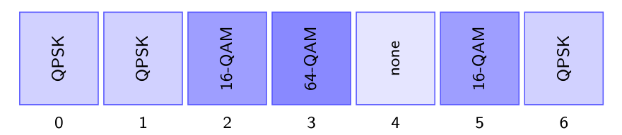
Limiti dell'OFDM
Rapporto potenza di picco / potenza media (PAPR)
- L'OFDM somma molte sinusoidi complesse, che occasionalmente si allineano in modo costruttivo:
- Figura: \lvert f_n(t)\rvert^2 normalizzato alla media, per un blocco OFDM con N=16 simboli QPSK casuali; picco \text{PAPR}=8.0 dB.
- Un PAPR grande richiede amplificazione di potenza lineare / back-off e può abbassare l'efficienza in potenza; picchi alti possono causare clipping e distorsione non lineare, comprese emissioni fuori banda.
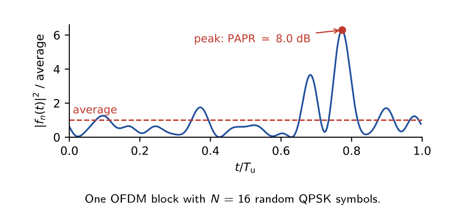
Perché il segnale OFDM può avere picchi grandi
- IFFT unitaria di N simboli: x[q]=\frac{1}{\sqrt N}\sum_{k=0}^{N-1}a[k]e^{j2\pi kq/N}.
- Se tutti i simboli hanno la stessa fase e \lvert a[k]\rvert=1: x[0]=N/\sqrt N=\sqrt N, \lvert x[0]\rvert^2=N. Poiché la IFFT è unitaria, \frac1N\sum_{q=0}^{N-1}\lvert x[q]\rvert^2=1.
- Il PAPR campionato vale quindi N per questo blocco (10\log_{10}N dB): mostra come sottoportanti allineate producano una grande ampiezza istantanea.
Un piccolo errore di frequenza rompe l'ortogonalità
- Con un errore di frequenza della portante \delta f al ricevitore, il segnale ricevuto contiene il fattore e^{j2\pi\delta ft}. La proiezione dell'i-esimo correlatore sulla k-esima sottoportante ideale è proporzionale a
- L'integrale è in generale non nullo anche per k\neq i (è la condizione sinc con \nu T_u=k-i+\delta fT_u): la variabile di decisione i contiene contributi delle altre sottoportanti (ICI).
- L'ortogonalità delle sottoportanti si basa su una spaziatura esatta \Delta f=1/T_u: l'OFDM è sensibile agli errori nella frequenza dell'oscillatore.
Offset di frequenza e di tempo: il modello a tempo discreto
- A tempo discreto, sia \epsilon_f=\delta f/\Delta f l'offset normalizzato alla spaziatura delle sottoportanti. Dopo la FFT
(il fattore campionato è e^{j2\pi\delta f\,qT_c}=e^{j2\pi\epsilon_fq/N}; per \epsilon_f=0, C_0=1 e C_{m\neq0}=0).
- Un errore di timing dentro il CP, se la finestra FFT contiene ancora campioni periodici validi, provoca soprattutto una rampa di fase lungo le sottoportanti; errori oltre il CP possono causare ISI e ICI.
- Lo sviluppo presente assume un canale LTI per tutta la trasmissione considerata.
Scelta del numero di sottoportanti: compromessi di base
- Periodo di campionamento T_c fisso e CP di L_{cp}=8 campioni:
| Dimensione IFFT N | T_u | Frazione di CP | Spaziatura \Delta f |
|---|---|---|---|
| 16 | 16T_c | 8/24=33.3\% | 1/(16T_c) |
| 64 | 64T_c | 8/72=11.1\% | 1/(64T_c) |
| 128 | 128T_c | 8/136=5.9\% | 1/(128T_c) |
- N più grande riduce l'overhead frazionario del CP a parità di memoria del canale; però riduce la spaziatura \Delta f=1/T_u e aumenta la sensibilità a un errore fisso di offset di frequenza. Anche il PAPR possibile cresce con N, e questo complica il progetto dell'amplificatore di potenza.
- Basato sui compromessi descritti in Goldsmith, par. 12.4–12.5. N più piccolo non è sempre meglio né sempre peggio: si sceglie insieme alla memoria del canale, all'overhead di guardia e alla precisione di sincronizzazione.
Spiegazioni e dimostrazioni passo-passo
Apri una voce per leggere la spiegazione in parole semplici e le dimostrazioni svolte riga per riga (🧩 = passaggio ricostruito da me).
OFDM: trasmissione multiportante con sottoportanti ortogonali
Spiegazione
- Perché multiportante. Nella Lezione 14 il canale a banda limitata con memoria era una convoluzione, e i contributi di simboli diversi si sovrapponevano (ISI). Gli appunti spiegano il trucco: se R_b è alto il segnale varia rapidamente, la banda trasmessa cresce e l'ISI aumenta. Con la S/P ogni ramo ha un rate R_b/N più basso, quindi banda minore: il sistema è "rallentato" e lotta meglio con l'ISI.
- Il canale visto da una sottoportante. Gli appunti lo disegnano: un segnale a portante singola occupa tutta la banda del canale e ne vede la risposta non piatta; spezzato in tante sottoportanti strette, su ciascuna il canale è approssimabile piatto, quindi più robustezza all'ISI.
- FDM. Trasmettitore: S/P, per ogni ramo un mapper, un impulso g(t) e un esponenziale e^{j2\pi f_it}; i rami si sommano in x(t), il segnale multiportante in banda base. Le f_i non sono ancora la portante finale: poi l'upconverter trasla tutto alla radiofrequenza (appunti). Nella FDM l'ortogonalità è garantita dalla non sovrapposizione; ricevitore = banco di filtri passa-banda, un demodulatore per ramo, P/S.
- OFDM. Le bande si sovrappongono, quindi la demodulazione è più difficile: serve una forma di ortogonalità che agisca anche nel dominio del tempo, cioè impulsi di forma particolare. Le frequenze f_i=i/T_u non sono quelle finali: si passa ancora per l'upconverter.
- Impulsi diversi per ramo. Nella slide ogni ramo ha il suo \phi_i(t): in generale possono essere diversi, e in alcuni casi non si può proprio usare lo stesso impulso di base (appunti). f_n(t) è la frame multicanale, cioè quella prodotta nell'n-esimo intervallo di simbolo.
- Due ortogonalità. Sottoportanti diverse (i\neq k) sono ortogonali dentro un blocco; blocchi diversi (n\neq m) non si sovrappongono nel tempo.
- Ricevitore. Un banco di N correlatori, ciascuno moltiplica per \phi_i^\ast(t-nT_u) e integra: un solo calcolo estrae l'i-esimo simbolo, a meno del rumore, se il canale non distorce. Nella slide la prof sottolinea che l'OFDM sostituisce i filtri con un banco di proiezioni ortogonali, realizzato con una FFT (ofdm con fft).
🎯 Esame: saper scrivere \phi_i(t), dimostrare l'ortonormalità con l'integrale dell'esponenziale, dire perché \Delta f=1/T_u è la spaziatura minima, e distinguere ISI (altri blocchi) e ICI (altre sottoportanti).
Perché importa
L'OFDM è il terzo modo di trattare l'ISI della Lezione 14, dopo equalizzatori e MLSE: invece di correggere l'ISI, la rende trascurabile su ogni sottoportante e la elimina del tutto con il prefisso ciclico. È la base di Wi-Fi (ieee 802 11a) e del 5G.
Dimostrazioni passo-passo
Derivazione — Conversione serie/parallelo come decomposizione polifase
Il convertitore S/P mette il bit d[nN+i] sull'uscita i al passo n: è la decomposizione polifase del flusso (appunti).
Ogni uscita va al ritmo R_b/N perché bisogna aspettare che il blocco sia completo (appunti). Gli impulsi \phi_i(t-nT_u) non durano T_b ma T_u=NT_b, l'intervallo di blocco: il bit rate su ogni ramo è diminuito.
Sanity check: in T_u=NT_b secondi entrano N bit e ne escono N (uno per ramo): il bit rate totale resta R_b. Ipotesi: segnalazione binaria (un bit per ramo e per blocco), come. Con un mapper a b bit per simbolo ogni ramo prende b bit per blocco.
Derivazione — Ortonormalità degli impulsi OFDM
Quindi \langle\phi_k(t-mT_u),\phi_i(t-nT_u)\rangle=\delta_{k-i}\,\delta_{m-n}. Gli appunti chiamano le due condizioni ortogonalità temporale (n=m) e ortogonalità fra gli impulsi (i=k).
Sanity check: per k=i l'integrale vale \frac{1}{T_u}\cdot T_u=1: l'impulso ha energia unitaria, come voluto dal fattore 1/\sqrt{T_u}. Ipotesi: frequenze esattamente multiple di 1/T_u; integrazione su un blocco intero. Se una delle due cade, il risultato non è più zero (vedi la derivazione seguente).
Derivazione — Condizione sinc e spaziatura minima \Delta f=1/T_u
La sinc si annulla quando \nu T_u è un intero non nullo: le sottoportanti sono ortogonali se (f_k-f_i)T_u\in\mathbb Z\setminus\{0\}. La spaziatura uniforme più piccola che lo garantisce è \Delta f=1/T_u.
Numeri: con T_u=3.2\ \mus \Delta f=1/T_u=312.5 kHz. Sanity check: per \nu=0 si ritrova \text{sinc}(0)=1. Se \nu T_u=0.1 (errore del 10% della spaziatura), \lvert\langle\phi_k,\phi_i\rangle\rvert=\text{sinc}(0.1)\approx0.98: due sottoportanti quasi uguali non sono quasi ortogonali, sono quasi parallele. L'ortogonalità vale solo sui multipli esatti. Ipotesi: stesso intervallo di integrazione [0,T_u) per entrambe.
💡 Connessione: gli appunti lo dicono così: basta una minima variazione della frequenza e si ha ICI. Per questo l'OFDM non era di uso pubblico: servivano banchi di oscillatori molto precisi. La FFT ha risolto il problema, e oggi l'OFDM è alla base del 5G.
Derivazione — ISI e ICI nella statistica di decisione
L'ISI viene dagli altri blocchi dello stesso ramo, l'ICI (intercarrier interference) dagli altri rami nello stesso blocco: gli appunti cerchiano d_1(0), che subisce l'interferenza dei simboli dello stesso stream e di fili diversi.
Ipotesi: sincronizzazione ideale di tempo e di portante, canale non dispersivo, impulsi di ricezione ortonormali.
Derivazione — Statistica del rumore all'uscita dei correlatori
I campioni di rumore sono incorrelati, con la stessa varianza N_0; essendo gaussiani (trasformazione lineare di un processo gaussiano) sono anche indipendenti: w_i[n]\sim\mathcal{CN}(0,N_0).
Sanity check: è lo stesso risultato della Lezione 9 (proiezioni del rumore bianco su una base ortonormale): ogni correlatore vede rumore di varianza pari alla PSD. Ipotesi: rumore bianco; impulsi ortonormali. Se il rumore non è bianco i campioni restano gaussiani ma correlati.
Derivazione — Autocorrelazione e PSD del segnale OFDM
Sanity check: potenza =\int S_{xx}df=E_s\sum_i\frac{1}{T_u}=NE_s/T_u: N simboli di energia E_s ogni T_u secondi. Corretto. Ipotesi: simboli indipendenti e a media nulla. Le sottoportanti si sovrappongono in frequenza, ma con simboli indipendenti le loro PSD si sommano e basta.
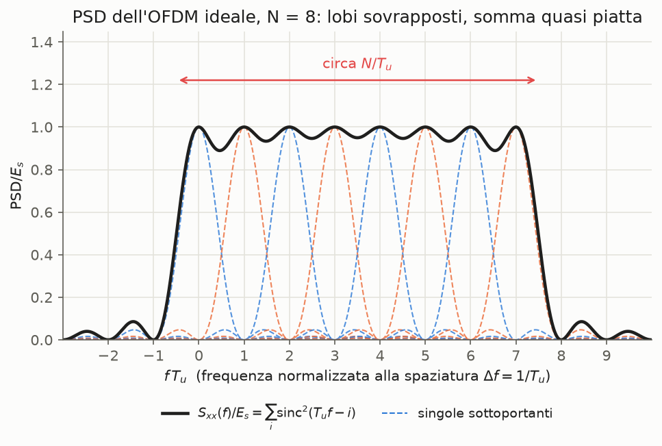
🧩 La PSD per N=8 (script output/grafici/genera_grafici_lezione15.py). Ogni tratteggiata è la \text{sinc}^2 di una sottoportante, centrata in i/T_u; nel picco di ciascuna tutte le altre passano per zero. La somma (nera) è quasi piatta su circa N/T_u, con un'ondulazione di circa il 5% e lobi laterali fuori banda dovuti alla finestra rettangolare.
Derivazione — Risparmio di banda con la sovrapposizione (esempio)
Numeri: N=128, T_u=0.2 ms, \beta=1, \varepsilon=0.1: B_{FDM}=128\cdot2.1/(2\cdot10^{-4}\,\text{s})=1.344 MHz; B_{overlap}=129.1/(2\cdot10^{-4}\,\text{s})=645.5 kHz \approx0.646 MHz. Sanity check: 0.646/1.344\approx0.48: la sovrapposizione dimezza circa la banda. Il guadagno viene tutto dal roll-off: con \beta=\varepsilon=0 le due formule coinciderebbero. Ipotesi: confronto illustrativo (Goldsmith, esempi 12.2–12.3), non una formula esatta di banda occupata: l'OFDM a finestra rettangolare ha lobi laterali sinc.
Prefisso ciclico e convoluzione circolare
Spiegazione
- Il problema. Un canale con memoria T_h "spalma" ogni blocco per T_h secondi: la coda del blocco n cade nel blocco n+1. Ma c'è un danno peggiore: dentro la finestra di un blocco, una sottoportante ritardata è una sinusoide troncata (accesa a metà finestra), e una sinusoide troncata non è più ortogonale alle altre.
- Perché non basta una guardia vuota. La guardia vuota risolve la sovrapposizione tra blocchi, ma il ritardato del blocco corrente resta troncato sulla finestra di T_u secondi: l'ICI rimane.
- Perché la copia della coda funziona. Le sottoportanti hanno periodo T_u (l'indice i è intero), quindi il prefisso è una vera estensione periodica. Qualunque ritardo \tau\le T_g fa entrare nella finestra la coda copiata, che è la continuazione esatta della sinusoide: nella finestra si vede sempre un periodo intero di ogni sottoportante, e il canale la moltiplica soltanto per H(k/T_u).
- A tempo discreto lo stesso fatto si chiama convoluzione circolare, e la DFT diagonalizza la convoluzione circolare: il sistema diventa N canali scalari indipendenti (equalizzazione ofdm).
🎯 Esame: spiegare a parole e con la condizione T_g\ge T_h perché il CP elimina l'ISI e l'ICI; scrivere Y_n[k]=H[k]a_k[n]+W_n[k] e dire quanto costa il CP (\eta_{cp}).
Perché importa
Il CP è ciò che rende l'OFDM robusto ai canali dispersivi senza un equalizzatore complicato: al posto di un equalizzatore a più prese o della MLSE della Lezione 14 basta una divisione per sottoportante. In cambio si paga una frazione L_{cp}/(N+L_{cp}) di tempo e di energia.
Dimostrazioni passo-passo
Derivazione — Il CP isola il blocco: la condizione T_g\ge T_h
I contributi di a_i[n-1] spariscono: niente ISI tra blocchi. Il CP deve coprire la memoria del canale, non una frazione arbitraria del tempo di simbolo.
Sanity check: se fosse T_g<T_h, per u piccolo e \tau vicino a T_h si avrebbe t-\tau<nT, cioè un campione del blocco n-1 dentro la finestra: è esattamente l'ISI della figura. Ipotesi: canale LTI causale di durata T_h; finestra FFT che inizia esattamente a nT+T_g.
Derivazione — Perché sparisce anche l'ICI (tempo continuo)
Grazie al CP, nell'intervallo utile ogni sottoportante è esattamente una sinusoide complessa (non una sinusoide troncata), quindi il canale la moltiplica soltanto per il numero complesso H(k/T_u).
Sanity check: canale ideale h(\tau)=\delta(\tau) ⇒ H(f)=1 ⇒ si ritrova r_i[n]=a_i[n]+w_i[n]. Ipotesi: T_g\ge T_h; canale LTI per tutta la trasmissione; sincronizzazione ideale.
Derivazione — Nota sulla normalizzazione degli impulsi
Nella derivazione della slide gli impulsi utili hanno energia unitaria su T_u e il fattore vale 1: le due formule differiscono solo per la normalizzazione, non per la proprietà OFDM. Il fattore T_u/T<1 ricorda che l'energia spesa nel prefisso non arriva al decisore.
Derivazione — Esempio numerico di inserimento del CP
cioè \tilde x[q]=x[(q)_8] con (q)_8=q\bmod 8, q=-3,\dots,7: per esempio \tilde x[-3]=x[5] perché -3+8=5. Il blocco trasmesso ha P=N+L_{cp}=11 campioni; il ricevitore scarta i primi 3 e tiene gli 8 successivi.
Derivazione — Da convoluzione lineare a circolare (tempo discreto)
Il canale fisico fa una convoluzione lineare; estensione ciclica e rimozione del CP fanno sì che gli N campioni utili in uscita siano una convoluzione circolare su N punti.
Sanity check: per q\ge L_h non serve il prefisso (q-\ell\ge0); il prefisso lavora solo per i primi L_h campioni, quelli che altrimenti "pescherebbero" nel blocco precedente.
Derivazione — Teorema della convoluzione circolare e relazione in frequenza
Il passaggio chiave è il terzo: l'esponenziale ha periodo N in q, quindi q e p+\ell danno lo stesso valore, e quando q percorre 0,\dots,N-1 anche p percorre tutti i resti. La DFT del canale H[k] è non unitaria (senza 1/\sqrt N).
Sanity check: H[k] è la risposta in frequenza del canale campionato in f_k=k/T_u: la controparte discreta di H(k/T_u) trovata a tempo continuo. Il canale non mescola mai valori diversi di k. Ipotesi: L_{cp}\ge L_h, L_h<N, canale LTI, sincronizzazione ideale.
Derivazione — Prezzo del CP e bit rate
Numeri (Goldsmith, esempio 12.4): T_c=1\ \mus, memoria massima del canale 5\ \mus, N=128, L_{cp}=8: T_u=128\ \mus, T_g=8\ \mus >5\ \mus, T=136\ \mus, \eta_{cp}=128/136\approx94.1\%; con tutti i 128 toni in 16-QAM non codificata R_b=128\cdot4/136\ \mu\text{s}=512/(1.36\cdot10^{-4}\ \text{s})\approx3.76 Mbit/s. Sanity check: senza CP sarebbe 512/128\ \mu\text{s}=4 Mbit/s; il CP toglie il 5.9\%, cioè L_{cp}/P=8/136. Ipotesi: il rate netto si riduce ancora per portanti riservate (pilota, guardie spettrali) e per il tasso del codice correttore.
L'overhead del CP è in tempo e in energia trasmessa, non nel numero di sottoportanti che portano informazione.
Realizzazione numerica dell'OFDM: IFFT e FFT
Spiegazione
- Cosa cambia rispetto al banco analogico. Il banco di N oscillatori a frequenze i/T_u, che dovevano essere precisissimi, è sostituito da un calcolo: la IFFT genera direttamente i campioni della somma delle sottoportanti. In ricezione la FFT calcola in un colpo solo le N proiezioni r_i[n] dei correlatori.
- Dove sta il prefisso. Nel trasmettitore il CP si aggiunge dopo la IFFT (si copiano campioni nel tempo); nel ricevitore si toglie prima della FFT. La FFT lavora sempre su N campioni, il canale vede P=N+L_{cp} campioni.
- Cosa fa il ricevitore dopo la FFT. Ottiene Y_n[k] su ogni sottoportante, stima H[k], equalizza gli N canali scalari e decide (equalizzazione ofdm).
🎯 Esame: disegnare lo schema a blocchi di trasmettitore e ricevitore OFDM in banda base, con IFFT/FFT, aggiunta/rimozione del CP, P/S e DAC/ADC; spiegare perché campionando a T_c=T_u/N compare la IDFT.
Perché importa
È la ragione per cui l'OFDM è diventato pratico: la FFT costa O(N\log N) ed è precisa per costruzione, mentre un banco analogico di oscillatori a spaziatura esatta era irrealizzabile.
Dimostrazioni passo-passo
Derivazione — Il campionamento uniforme fa comparire la IDFT
Il guadagno costante 1/\sqrt{T_c} tra f_n(qT_c) e x_n[q] lo assorbe il guadagno analogico del trasmettitore. La normalizzazione 1/\sqrt N rende DFT e IDFT unitarie.
Sanity check: f_s=N/T_u è proprio la larghezza (circa N\Delta f) dello spettro del blocco, la somma di sinc² di ofdm: si campiona alla frequenza di Nyquist di un segnale complesso che occupa circa N/T_u. Ipotesi: campionamento sincrono con l'inizio del blocco utile. La IFFT calcola la IDFT in O(N\log N) operazioni invece di N oscillatori separati.
Derivazione — DFT unitaria, inversa e Parseval
Sanity check: è la versione discreta dell'ortonormalità delle sottoportanti: le righe di \mathbf F_N sono le sottoportanti campionate, e sono ortonormali.
Derivazione — Serializzazione dell'uscita IFFT
Equalizzazione nel dominio della frequenza, codifica e modulazione adattativa nell'OFDM
Spiegazione
- Un'equalizzazione che costa una divisione. Dentro il modello ideale il ricevitore non ha bisogno di un equalizzatore multicanale o di sequenza: una divisione complessa per sottoportante compensa il canale. Se \lvert H(i/T_u)\rvert è piccolo, la divisione amplifica il rumore.
- Serve conoscere il canale. La rivelazione coerente richiede di stimare H[k]: per questo alcune posizioni della IFFT sono riservate ai piloti (ofdm con fft).
- Codifica e interleaving. Se \lvert H[k]\rvert è piccolo su alcuni toni, i simboli rivelati lì sono poco affidabili. Il codice di canale aggiunge ridondanza; l'interleaver sparge i bit codificati su sottoportanti e blocchi OFDM diversi (la griglia tempo-frequenza della figura, con le celle colorate come schema, non un codice specifico). Il decodificatore usa i bit ricevuti bene per correggere quelli dei toni attenuati: è il motivo semplice per cui l'OFDM si combina con codifica e interleaving in frequenza.
- Modulazione adattativa. Se il trasmettitore conosce i guadagni H[k] può cambiare ordine della costellazione o potenza da un tono all'altro: costellazioni robuste (o nessun dato) sui toni deboli, più bit sui toni forti. Richiede che il trasmettitore abbia informazione sulla qualità del canale, e non è obbligatoria in tutti gli standard OFDM.
🎯 Esame: scrivere ZF e MMSE a una presa, dire perché bastano (matrice diagonale) e perché un nullo spettrale non si recupera; spiegare il ruolo di codifica, interleaving e modulazione adattativa.
Perché importa
Confrontata con la Lezione 14 è la grande semplificazione dell'OFDM: invece di un equalizzatore frazionario con il suo vettore di coefficienti o di un traliccio di Viterbi a M^L stati, N divisioni. Il prezzo è che i toni attenuati restano attenuati: l'OFDM sposta il problema dall'ISI alla diversità in frequenza, da recuperare con la codifica.
Dimostrazioni passo-passo
Derivazione — Matrice diagonale ed equalizzazione indipendente
Fuori diagonale ci sono zeri perché il canale non mescola sottoportanti diverse: invertire \boldsymbol\Lambda_H vuol dire dividere ogni riga per il suo H[k]. Il modello diagonale regge solo con le ipotesi dette: CP sufficiente, sincronizzazione, canale LTI.
Derivazione — Esempio a due prese e nullo spettrale
Numeri: k=0: 4; k=4: 4\cos^2(\pi/4)=2; k=8: 4\cos^2(\pi/2)=0, cioè H[8]=1+e^{-j\pi}=0. Sanity check: il canale 1+z^{-1} è un filtro a media mobile, passa-basso, con lo zero a metà banda: è il grafico, con i 16 valori campionati sulla curva continua. Ipotesi: canale noto e LTI.
Sottoportanti diverse hanno coefficienti complessi diversi, ma restano relazioni scalari separate. Non serve un modello di propagazione radio: basta la risposta impulsiva elementare di un sistema LTI. In k=8 però il simbolo non arriva al ricevitore e nessun equalizzatore può recuperarlo: il CP elimina l'interferenza, non i nulli spettrali.
Derivazione — Zero forcing e MMSE a una presa
Sanity check: per N_0\to0 il coefficiente diventa E_sH^\ast/(E_s\lvert H\rvert^2)=1/H: si ritrova lo ZF. Per \lvert H\rvert\to0 il coefficiente tende a 0 invece di esplodere: l'MMSE limita l'amplificazione del rumore. Ipotesi: canale noto, simboli indipendenti. La stima MMSE è polarizzata: E\{\hat a\mid a\}=\frac{E_s\lvert H\rvert^2}{E_s\lvert H\rvert^2+N_0}\,a\neq a.
💡 Connessione: sono le versioni scalari dello ZF e dell'MMSE della Lezione 14 (equalizzazione): là \mathbf c_{MMSE}=\sigma_s^2\mathbf R_{rr}^{-1}\mathbf p_0, qui \mathbf p_0 si riduce al numero H e \mathbf R_{rr} al numero E_s\lvert H\rvert^2+N_0. Anche il difetto dello ZF è lo stesso: amplifica il rumore dove il canale attenua.
Derivazione — Bit per blocco con modulazione adattativa
(🧩 conto mio sulla figura; il tono 4, debole, non porta dati ed è escluso da \mathcal D.)
Limiti dell'OFDM: PAPR, offset di frequenza e di tempo, scelta di N
Spiegazione
- Perché il PAPR è un problema. Un PAPR alto richiede un amplificatore di potenza lineare su un'ampia dinamica, quindi un grande back-off (si lavora lontano dalla saturazione), e questo abbassa l'efficienza in potenza. I picchi possono causare clipping e distorsione non lineare, con emissioni fuori banda.
- Perché l'offset di frequenza è grave. La sinc delle sottoportanti è larga \Delta f: spostarsi di una frazione di \Delta f fa uscire dagli zeri delle altre sottoportanti. È la stessa sensibilità detta negli appunti ("basta una minima variazione della frequenza e ho ICI"), e il motivo per cui la sincronizzazione di portante della Lezione 13 è essenziale per l'OFDM.
- La scelta di N non è "più piccolo è meglio" né il contrario: si sceglie insieme alla memoria del canale, all'overhead di guardia e alla precisione di sincronizzazione.
🎯 Esame: dare la definizione di PAPR e il caso peggiore N; spiegare perché un offset di frequenza crea ICI e un offset di tempo dentro il CP solo una rampa di fase; discutere i compromessi nella scelta di N.
Perché importa
Sono il rovescio della medaglia dell'ortogonalità esatta: l'OFDM elimina ISI e ICI solo se tempo e frequenza sono quelli giusti, e chiede un'elettronica lineare. Sono i punti da citare quando si confronta l'OFDM con la trasmissione a portante singola equalizzata.
Dimostrazioni passo-passo
Derivazione — PAPR nel caso peggiore
Numeri: N=16 → 12 dB; N=64 → 18 dB (🧩). La figura, un blocco con N=16 simboli QPSK casuali, ha un picco di 8.0 dB: un blocco tipico sta sotto il caso peggiore. Sanity check: con tutti i simboli in fase gli N fasori si sommano in ampiezza (N volte), mentre la potenza media cresce solo come N: il rapporto è N. Ipotesi: PAPR campionato (sui soli N campioni); il segnale continuo può avere picchi tra un campione e l'altro.
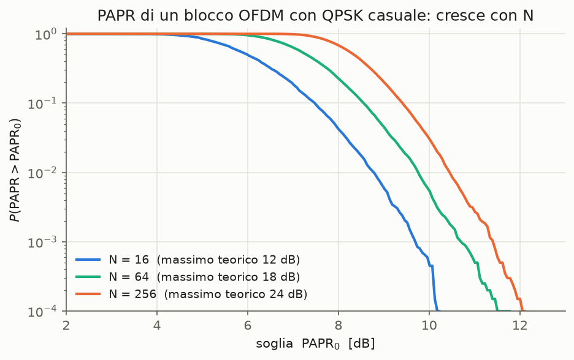
🧩 Probabilità che il PAPR di un blocco con simboli QPSK casuali superi una soglia, per N=16,64,256 (simulazione con IFFT sovracampionata, script output/grafici/genera_grafici_lezione15.py). Le curve si spostano a destra al crescere di N, come dice la slide; il caso peggiore 10\log_{10}N dB è rarissimo, ma picchi di 8–11 dB sono frequenti.
Derivazione — L'offset di frequenza rompe l'ortogonalità
La sinc si annulla solo se \nu T_u è un intero non nullo: per k\neq i e \epsilon_f non intero l'integrale è diverso da zero, quindi la variabile di decisione i contiene contributi delle altre sottoportanti (ICI); e per k=i vale \text{sinc}(\epsilon_f)<1, cioè si perde anche segnale utile.
Derivazione — Modello discreto con offset: i coefficienti C_m(\epsilon_f)
Sanity check: per \epsilon_f=0: C_0=\frac1N\cdot N=1 e C_m=\frac1N\sum_qe^{-j2\pi mq/N}=0 per m\neq0 (serie geometrica): si ritrova Y[k]=H[k]a[k]+W[k]. Inoltre \sum_m\lvert C_m(\epsilon_f)\rvert^2=1 (Parseval sulla sequenza e^{j2\pi\epsilon_fq/N}/N): l'offset non distrugge potenza, la sposta dalla sottoportante giusta alle vicine. Ipotesi: offset costante sul blocco; canale LTI per tutta la trasmissione.
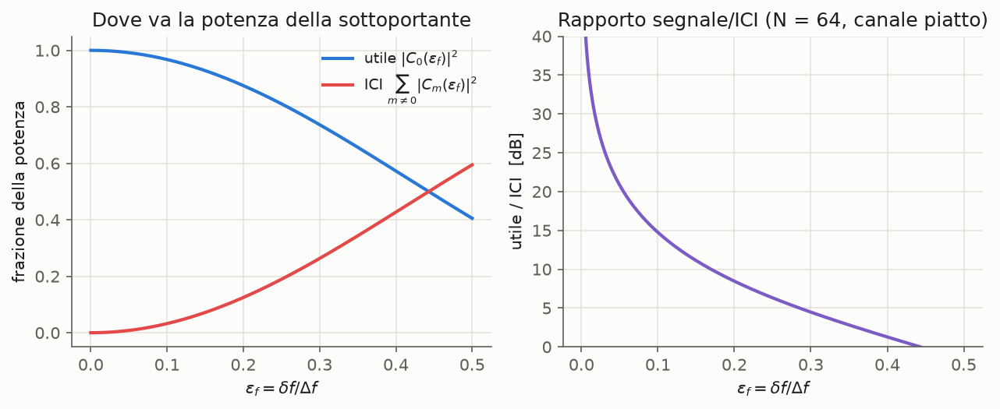
🧩 A sinistra la frazione di potenza che resta sulla sottoportante, \lvert C_0(\epsilon_f)\rvert^2, e quella che finisce in ICI, 1-\lvert C_0(\epsilon_f)\rvert^2, per N=64; a destra il loro rapporto in dB (script output/grafici/genera_grafici_lezione15.py). Con un offset del 10% della spaziatura (\epsilon_f=0.1) il rapporto segnale/ICI è già sceso a circa 15 dB, per quanto basso sia il rumore: è un pavimento dovuto all'interferenza.
Derivazione — Offset di tempo dentro il CP: rampa di fase
🧩 Derivazione mia: la fase -2\pi kd/N cresce linearmente con l'indice k, è la rampa di fase della slide. Non c'è ICI e la si compensa insieme a H[k] (sembra un canale con un ritardo in più). Se invece la finestra esce dalla zona valida, entra un pezzo del blocco precedente o successivo: ISI e ICI.
Derivazione — Tabella della scelta di N
| N | T_u | frazione di CP L_{cp}/(N+L_{cp}) | spaziatura \Delta f=1/T_u |
|---|---|---|---|
| 16 | 16T_c | 8/24=33.3\% | 1/(16T_c) |
| 64 | 64T_c | 8/72=11.1\% | 1/(64T_c) |
| 128 | 128T_c | 8/136=5.9\% | 1/(128T_c) |
N più grande riduce l'overhead frazionario del CP a parità di memoria del canale, ma riduce la spaziatura \Delta f=1/T_u: un offset di frequenza fisso \delta f diventa un \epsilon_f=\delta f/\Delta f=\delta f\,NT_c più grande, e l'ICI cresce. Anche il PAPR possibile cresce con N, e questo complica il progetto dell'amplificatore di potenza.
Sanity check: passando da N=16 a N=128 l'overhead scende di circa 6 volte, ma \epsilon_f cresce di 8 volte a parità di \delta f.
IEEE 802.11a
Cos'è
Standard di rete locale senza fili (Wi-Fi) con livello fisico OFDM: canale di 20 MHz, IFFT su N=64 punti, prefisso ciclico di 16 campioni, 48 sottoportanti che portano dati. Nella Lezione 15 è l'esempio numerico dei parametri temporali di un sistema ofdm.
Come si usa nel corso
Parametri temporali:
Il prefisso è 16/80=20\% dei campioni trasmessi, i campioni utili 64/80=80\%.
Bit rate non codificati con 48 portanti dati e simbolo da 4\ \mus:
| Modulazione | Bit per portante dati | Bit rate non codificato |
|---|---|---|
| BPSK | 1 | 48/4\ \mu\text{s}=12 Mbit/s |
| QPSK | 2 | 96/4\ \mu\text{s}=24 Mbit/s |
| 16-QAM | 4 | 192/4\ \mu\text{s}=48 Mbit/s |
| 64-QAM | 6 | 288/4\ \mu\text{s}=72 Mbit/s |
Sono bit rate fisici lordi, prima dell'overhead del codice di canale: con un codice di tasso 1/2 il rate netto si dimezza (BPSK: 6 Mbit/s).
🧩 Controllo: T_u=1/\Delta f=1/312.5\ \text{kHz}=3.2\ \mus, coerente con l'ortogonalità \Delta f=1/T_u; T_g=0.8\ \mus è la memoria massima del canale che il sistema tollera senza ISI (prefisso ciclico). Delle 64 posizioni della IFFT solo 48 portano dati: le altre sono riservate (toni nulli, piloti), come previsto nel trasmettitore.
Concetti correlati
- ofdm — spaziatura \Delta f=1/T_u.
- prefisso ciclico — L_{cp}=16, \eta_{cp}=80\%.
- ofdm con fft — IFFT su 64 punti, toni riservati.
- dimensionamento ofdm — gli stessi conti come esercizio.
FFT e IFFT
Cos'è
La FFT (fast Fourier transform) e la IFFT sono algoritmi veloci per calcolare la DFT e la IDFT su N punti in O(N\log N) operazioni invece di O(N^2). Non sono trasformate diverse dalla DFT/IDFT: danno lo stesso risultato, più in fretta.
Come si usa nel corso
- Nel trasmettitore ofdm la IFFT su N punti genera gli N campioni del blocco utile a partire dagli N simboli in frequenza, al posto di N oscillatori a tempo continuo.
- Nel ricevitore la FFT calcola le N proiezioni sulle sottoportanti, al posto del banco di correlatori (o di filtri passa-banda della FDM).
- Gli appunti: prima l'OFDM non era di uso pubblico perché servivano banchi di oscillatori molto precisi; la FFT ha risolto questi problemi, e oggi è alla base del 5G.
- 🧩 Ordine di grandezza: per N=64 (802.11a) una DFT diretta richiede N^2=4096 moltiplicazioni complesse, una FFT radice 2 circa \frac N2\log_2N=192.
Concetti correlati
- ofdm con fft — dove compare la IDFT campionando il blocco.
- prefisso ciclico — la DFT diagonalizza la convoluzione circolare.
- lab setup e spettro — la DFT come campionamento della DTFT (laboratorio).
Esercizio svolto · Dimensionamento di un sistema OFDM
Metodo
Si applica quando si danno il passo di campionamento (o la banda), il numero di punti della IFFT e la memoria del canale, e si chiedono i tempi del simbolo OFDM, la lunghezza del prefisso, l'efficienza e il bit rate. È una catena di definizioni:
- Campionamento: T_c=1/B se si dà la banda B del canale.
- Tempo utile e spaziatura: T_u=NT_c, \Delta f=1/T_u=B/N.
- Prefisso: scegliere L_{cp} con T_g=L_{cp}T_c\ge T_h (memoria del canale), cioè L_{cp}\ge\lceil T_h/T_c\rceil.
- Durata del simbolo OFDM: T=T_u+T_g, P=N+L_{cp} campioni.
- Efficienza: \eta_{cp}=N/(N+L_{cp})=T_u/T.
- Bit rate lordo: R_b=N_d\log_2M/T con N_d portanti dati; netto: moltiplicare per il tasso del codice.
Formule usate
- ofdm — \Delta f=1/T_u; banda con sottocanali sovrapposti.
- prefisso ciclico — T_g\ge T_h, \eta_{cp}=N/(N+L_{cp}), R_b=\frac{N_d\log_2M}{T_u}\cdot\frac{N}{N+L_{cp}}.
- limiti dell ofdm — offset normalizzato \epsilon_f=\delta f/\Delta f, PAPR massimo N.
Casi svolti
Caso 1 — Scelta del prefisso (Goldsmith, esempio 12.4)
Traccia: canale campionato con T_c=1\ \mus e memoria massima 5\ \mus; N=128, L_{cp}=8; tutti i 128 toni in 16-QAM non codificata. Calcolare T_u, T_g, T, \eta_{cp} e il bit rate lordo.
Svolgimento:
Risultato: T=136\ \mus, \eta_{cp}\approx94.1\%, R_b\approx3.76 Mbit/s. Verifica: basterebbe L_{cp}=5; con 8 si ha margine. Con \Delta f=1/128\ \mu\text{s}\approx7.8 kHz.
Caso 2 — IEEE 802.11a
Traccia: canale da 20 MHz, N=64, L_{cp}=16, 48 portanti dati. Calcolare tempi, frazione di prefisso e bit rate non codificati.
Svolgimento:
Risultato: 12, 24, 48, 72 Mbit/s per BPSK, QPSK, 16-QAM, 64-QAM; con codice di tasso 1/2 in BPSK, 6 Mbit/s. Verifica: T_u=1/\Delta f ✓; il canale deve avere memoria \le0.8\ \mus.
Caso 3 — Overhead del CP al variare di N
Traccia: T_c fisso, L_{cp}=8; confrontare N=16,64,128.
Svolgimento: frazione di CP =L_{cp}/(N+L_{cp}): 8/24=33.3\%, 8/72=11.1\%, 8/136=5.9\%; spaziatura 1/(NT_c): 1/(16T_c), 1/(64T_c), 1/(128T_c). Risultato: N grande ⇒ overhead piccolo ma \Delta f piccolo, quindi a parità di \delta f l'offset normalizzato \epsilon_f=\delta f\,NT_c cresce (8 volte da 16 a 128) e cresce il PAPR possibile (10\log_{10}N: 12 dB, 18 dB, 21 dB).
Caso 4 — Banda con e senza sovrapposizione (Goldsmith, esempi 12.2–12.3)
Traccia: N=128 sottocanali, T_u=0.2 ms, coseno rialzato con \beta=1, margine \varepsilon=0.1. Confrontare la banda FDM con quella a sottocanali sovrapposti.
Svolgimento:
Risultato: la sovrapposizione riduce la banda a circa il 48%.
Caso 5 — Nullo spettrale di un canale a due prese
Traccia: h[0]=h[1]=1, N=16. Quali sottoportanti sono perse?
Svolgimento: \lvert H[k]\rvert^2=4\cos^2(\pi k/16) (equalizzazione ofdm) si annulla per \pi k/16=\pi/2, cioè k=8. Risultato: il tono 8 è perso: nessun equalizzatore lo recupera; servono codifica e interleaving o non usarlo per i dati.
Trappole
- T_u non è la durata del simbolo OFDM trasmesso: con il prefisso è T=T_u+T_g. Il bit rate si divide per T, la spaziatura è 1/T_u.
- Il CP si dimensiona sulla memoria del canale (T_h), non come percentuale fissa del simbolo.
- Il bit rate lordo usa le portanti dati (N_d), non tutte le N posizioni della IFFT (in 802.11a 48 su 64).
- Rate lordo ≠ rate netto: va moltiplicato per il tasso del codice.
- La DFT del canale H[k] è non unitaria (senza 1/\sqrt N), mentre quella dei simboli è unitaria.
Domande da esame
- Perché un sistema multiportante combatte l'ISI? Che differenza c'è tra FDM e OFDM?
- Scrivi gli impulsi OFDM e dimostra che sono ortonormali. Perché la spaziatura minima è 1/T_u?
- Che cosa sono ISI e ICI nella statistica di decisione di un sistema multiportante? Quando si annullano?
- Ricava la statistica del rumore all'uscita dei correlatori OFDM.
- Ricava la PSD di un segnale OFDM. Perché il segnale è ciclostazionario?
- Che cos'è il prefisso ciclico? Perché una guardia vuota non basta? Qual è la condizione sulla sua durata?
- Dimostra che con il CP l'uscita del correlatore i è H(i/T_u)a_i[n]+w_i[n].
- Come si realizza l'OFDM con IFFT/FFT? Disegna trasmettitore e ricevitore in banda base.
- Perché il CP trasforma la convoluzione lineare in circolare? Ricava Y_n[k]=H[k]a_k[n]+W_n[k].
- Equalizzazione a una presa: ZF e MMSE. Che succede su un nullo spettrale?
- Quanto costa il CP? Calcola efficienza e bit rate di un sistema dato (esempio 802.11a).
- Che cos'è il PAPR e perché è un problema? Qual è il caso peggiore?
- Perché l'OFDM è sensibile agli offset di frequenza? Che effetto ha un errore di timing dentro il CP?
- Come si sceglie il numero di sottoportanti?
📚 Approfondimento facoltativo, non d'esame: le note di G. Gelli su multiportante, OFDM e DMT (prestazioni QAM, bit loading, water filling). Sta in una pagina a parte, separata dal materiale delle lezioni.